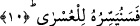
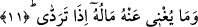
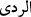

10. Biz de onu en zora hazırlarız.
Kendisi böyle tercih ettiği için Biz de onu Cehenneme girmek ve onun öncesindeki
azaplar gibi, şiddet ve zorluğa götürecek haslete hazırlarız.
“Verme” ve “cimrilik etme” kendilerinden sonra sayılan en kolaya ve en zora götüren
hasletler içerisinde derece itibariyle en düşük olmalarına rağmen sûredeki bu iki kısmın
“verme” ve “cimrilik etme” ile başlatılması, bunların temel nitelikler olduklarına,
kendilerinden sonra gelen tasdik, takvâ, yalanlama, müstağnî sayma gibi niteliklerin
birer tamamlayıcısı olmadıklarına işâret etmek içindir.
Zâhir olan şudur ki âyetin başında geçen “sîn” harfi, itâat ve mâsiyete vaad edilen
karşılığın varlığına delalet etmek içindir. Bu ise âhirette olacaktır. Âhiret ise daha sonra
gerçekleşecek ve vuku bulması beklenilen bir husustur. Bundan dolayı fiilin başına
gelecek zaman edatı olan “sîn” harfi getirilmiştir. Amaç vaad edilen şeyin belli bir
zamanı olduğunu, şu anda hazır olmadığını göstermektir. Nitekim bazı tefsirlerde böyle
geçmektedir.
Âyette işâret vardır ki rûhî, sırrî ve kalbî tâaat ve ibâdet konusunda kim nefsinde
cimrilik eder, Biz’e yönelmekten kendini müstağnî sayar ve kendisine bahşetmiş
olduğumuz organlarının düzgünlüğü, makam, mertebe ve mal gibi en güzel şeyleri
yalanlarsa, Biz de onu en zora hazırlarız. O ise Biz’den uzak olmak, kovulmak, lânete
uğramak ve hicab ateşine/Cehenneme girmektir.
11. Düştüğü zaman da malı kendisine hiç fayda vermez.
“Düştüğü” yâni helâk olduğu ve öldüğü “zaman da malı kendisine hiç fayda
vermez.” azap namına hiçbir şeyden kurtaramaz.
Ya da cimrilik ettiği malı ona ne fayda verir? Bu durumda soru istifhâm-ı inkârî olmuş
olur.
Râğıb der ki: “
” helâk demektir. “tereddî” ise helâke maruz kalmak anlamınadır.”
Ya da, kabre konulduğu zaman, çukura indiği veya Cehennemin dibine düştüğü zaman,
demektir.
Âhirette ihtiyaç duyduğu vakit insanın faydalanacağı mal, haklarını verdiği ve daha
ölmeden önden gönderdiği maldır. Yoksa cimrilik edip elinde tuttuğu ve vârislerine
bıraktığı mal değildir.
Âyette işâret vardır ki: Biz’e muhâlefet ettiği, beşeri tabiatına uygun davrandığı için
düştüğü zaman, kahır ve intikam sûretinde kendisine tecellî ettiğimizde onu bizim
kahrımızdan ve gazabımızdan sâhip olduğu hangi şey kurtaracaktır?!